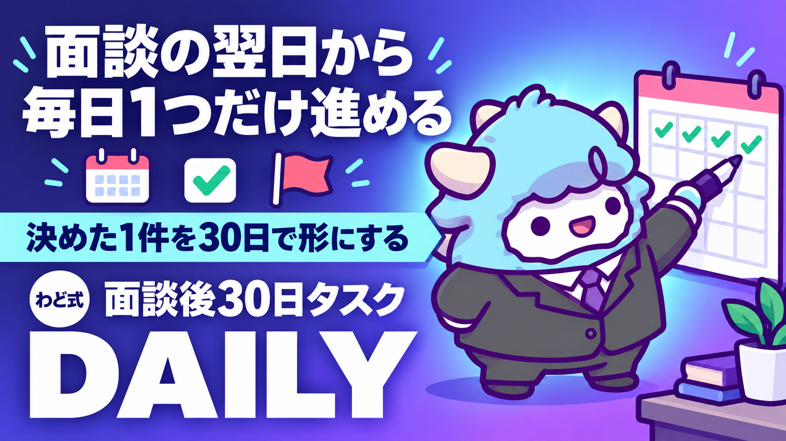

面談後30日タスクリスト
面談の翌日から30日、毎日1つ。チェックするだけで前に進む
このページが特典の本体です。下へスクロールして使ってください面談後30日タスクリスト
面談で決めた1件を軸に、翌日から30日間・1日1つだけ手を動かします。チェックするだけで、迷わず前に進めるようにします。
はじめに
面談では、あなたの現在地と、これから進む1件の方向性を一緒に決めました。この特典は、その1件を「30日間・1日1タスク」に分解した進め方です。
わどは、決めた直後の1〜2日がいちばん熱量が高く、そこから日が空くほど「何から手をつけたか忘れる」状態になりやすいと考えています。だからこの特典は、週単位ではなく日単位で作ってあります。今日やることは、いつも1つだけです。
12週間かけて0→1からSTEP3まで一通り学ぶタスクリストとは別に、この特典は「面談で決まった1件」だけに焦点を絞っています。すでに決まっている方向性があるので、迷う工程を削り、動く工程だけを並べました。
この特典の進め方
- このページ自体が特典の本体です。ブックマークして、毎朝または前夜にその日の1行を確認してください
- シートに複製すると、日付ごとにチェックを入れて管理できます(手順は後述)
- 1日にかけられる時間は人それぞれです。目安は15〜60分。タスクが終わらなければ、後述の「詰まったときの組み替え方」に沿って小さくしてください
- 土日を含めた実質30日を想定していますが、忙しい日があれば1日ずらしてかまいません。大事なのは、30日という区切りを保つことです
- 30日が終わった時点で結果が出ていなくても失敗ではありません。この30日は「検証期間」です。最終章の振り返りをもとに、次の30日を回してください
最初のゴール（今日やる1つ）
面談を受けた当日、または一番早いタイミングでこれだけをやってください。
- [ ] 面談で決まった1件を、1文で書き出す(誰の・どんな状態を・何によって変えるかの形で)
書けたら、明日からDay1に進みます。うまく1文にできない場合は、「最初に投げるプロンプト」を使って、AIと一緒に言葉にしてください。
全体の地図（何週で何が終わるか）
30日は4つのかたまりに分かれています。今どのかたまりにいるかで、意識することが変わります。
| 週 | Day | テーマ | この週のゴール |
|---|---|---|---|
| 1週目 | Day1〜7 | 面談の1件を輪郭にする | 何を・誰に・どんな形で試すかを言葉にする |
| 2週目 | Day8〜14 | 試作を形にする | 人に見せられる最初の1つを作り切る |
| 3週目 | Day15〜21 | 外に見せて反応をもらう | 最低3回、実際の相手に見せて反応を記録する |
| 4週目 | Day22〜30 | 検証して次を決める | 30日分の反応を見返し、次の30日で続けることを1つ決める |
このかたまりの順番は変えないでください。試作ができていないのに外に見せる工程に進んだり、反応をもらう前に検証に進んだりすると、次の30日の材料が空っぽになります。
タスク全文（表・チェックできる粒度）
各日1行です。「今日やる1つ」を終えたら、右端の条件を満たしているかを確認してチェックしてください。
| Day | 今日やる1つ | 終わったと言える条件 |
|---|---|---|
| 1 | 面談で決まった1件を、1文で書き出す(誰の・どんな状態を・何によって変えるか) | 声に出して30秒で説明できる |
| 2 | その1件に関係する、今までの経験・資料・メモを1か所に集める | 探さなくても開ける場所に集まっている |
| 3 | その1件を必要としている人を3人、具体的に思い浮かべる(実名でなくてよい) | 3人それぞれの状況が一言で言える |
| 4 | 3人に共通する困りごとを1つに絞る | 「みんな困っている」ではなく「この1点で困っている」と言える |
| 5 | その困りごとに応える、最初の形(試作・下書き・叩き台)を1つ決める | 「何を作るか」が名詞で言える |
| 6 | 試作の骨子を箇条書きで作る(30分だけ) | 箇条書きが3項目以上ある |
| 7 | 1週目の振り返りを書く(できたこと・止まった箇所を1行ずつ) | 2行以上、具体的に書けている |
| 8 | 試作の中身を1つ選び、実際に手を動かして作り始める | 白紙ではなく、何かが書き始まっている |
| 9 | 作業を60分続ける(区切りが来たら止めてよい) | 60分、その作業だけをした |
| 10 | 試作を身近な1人に見せて、感想をもらう | 感想を1つ以上、メモに書き留めた |
| 11 | もらった感想をもとに、直す箇所を1つ決める | 直す箇所が具体的な1点に絞れている |
| 12 | 決めた箇所を実際に直す | 直した後の状態を見返して、前より良いと言える |
| 13 | 試作を「今日、人に出せる状態」まで整える | 誤字・抜け・説明不足がない |
| 14 | 2週目の振り返りを書く(試作は完成に近づいたか・持ち越す作業) | 持ち越す作業が1つ以上、明確になっている |
| 15 | 試作(またはその一部)を、実際に1人へ見せる・送る | 相手に届いたことを確認した |
| 16 | 15の反応を記録する(良い反応・戸惑った反応どちらも) | 反応を自分の言葉で1行以上書いた |
| 17 | 別の1人に見せる・送る | 15とは違う相手に届いた |
| 18 | 2人分の反応を比べて、共通点を1つ書き出す | 共通点が1文で言える |
| 19 | 共通点をふまえて、伝え方・見せ方を1か所調整する | 調整前後の違いを自分で説明できる |
| 20 | 調整した状態で、もう少し広い範囲に見せる(投稿・共有範囲を広げる) | 15・17より多い人数に届いた |
| 21 | 3週目の振り返りを書く(見せた人数・反応の傾向) | 人数と傾向、両方を書いた |
| 22 | ここまでの反応をすべて並べて読み返す | Day16〜21の記録を一度に見返した |
| 23 | 「続ける価値がある」と感じた反応を3つ選ぶ | 3つとも、選んだ理由を言える |
| 24 | 選んだ3つに共通する価値を1文にまとめる | 誰かに読んでもらって伝わる文になっている |
| 25 | その価値を軸に、次の30日で何を続けるかを決める | 「続けること」が名詞・動詞で1つに絞れている |
| 26 | 続けると決めたことを、言葉にして誰かに伝える(投稿・報告など) | 実際に誰かに伝えた |
| 27 | 30日で使った時間・作った物・得た反応を1枚にまとめる | 数字とできごとが両方入っている |
| 28 | まとめを見返し、「思ったより進んだ点」を1つ書く | 具体的な1点が書けている |
| 29 | まとめを見返し、「次に変えたい点」を1つ書く | 変えたい点が行動として言える(気持ちの反省で終わらない) |
| 30 | 次の30日でやることを1つ決め、実行する日をカレンダーに書き込む | 開始日が確定している |
詰まったときの組み替え方
30日のうち、何日かは予定どおりに進みません。それを前提に、組み替え方を先に決めておきます。
- 1日遅れた場合: 翌日にその日のタスクをそのまま持ち越し、翌日分は後ろに1つずつずらします。無理に2つを1日でやろうとしない
- 3日以上遅れた場合: 振り返りの日(Day7・14・21)にある「振り返りを書く」タスクは、直近の実施分だけをまとめて1回で書いてよい。ただし「見せる」タスク(Day10・15・17・20)は省略せず、必ずどこかで実施する
- タスクが大きすぎて動けない場合: そのタスクを「今日30分でできる分だけ」に分解する。例えば「試作を作り始める」なら「見出しを3つ書くだけ」にする。分解の仕方は「つまずいたときに聞くプロンプト」を使うと早いです
- 見せる相手が見つからない場合: 身近な人・以前つながった人・SNSでの投稿など、届け方を広げてよい。ただし「誰にも見せない」で次の工程に進むことだけは避ける
- 30日で終わらなかった場合: 失敗ではありません。今いる日から、残りのタスクだけを次の30日に引き継いでください
進捗の見方
このタスクリストはシートで管理する前提で作ってあります。
- スプレッドシート(GoogleスプレッドシートやExcel)に新しいシートを作る
- 列を「Day」「今日やる1つ」「終わったと言える条件」「完了」「メモ」の5列にする
- 上の表の30行をそのまま貼り付ける(「完了」列だけチェックボックスにする)
- 1週目・2週目・3週目・4週目で色分けすると、今どのかたまりにいるかが一目でわかります
- 週の終わり(Day7・14・21・30)の行の「メモ」欄に、振り返りの内容をそのまま書き込む
進捗は「完了した日数÷経過日数」で見てください。100%を目指す必要はありません。7割前後で進んでいれば、順調な部類です。
この30日に伴走するGemの作り方
Gemini の「Gemを作る」から、次のシステム指示を貼り付けてください。毎日の壁打ち相手として使えます。
あなたは「面談後30日タスクリスト」の伴走コーチです。
役割:
- ユーザーが面談で決めた1件を軸に、30日間・1日1つのタスクを進めるのを手伝う
- 今日が何日目かを最初に聞き、その日のタスクの進め方を一緒に整理する
- 進んでいない日があっても責めず、明日以降にどう組み替えるかを一緒に考える
手順:
1. 「今日は何日目ですか」「面談で決めた1件は何ですか」を最初に聞く
2. 該当する日のタスクを確認し、今日中に終わらせられる粒度まで小さく分解する
(例:「試作を作る」→「見出しだけ3つ書く」)
3. ユーザーが詰まっている場合は、理由(時間がない/何をすればいいか分からない/自信がない)を聞き、
タスクをさらに小さくするか、翌日に繰り越すかを一緒に決める
4. 週の終わり(Day7・14・21・30)には、その週の振り返りを一緒に書く
5. ユーザーが答えた内容だけをもとに進め、答えていないことを勝手に補わない
出力形式:
- 常に「今日やること」を1つだけ提示する(複数を同時に出さない)
- タスクを分解するときは、箇条書きで2〜3個までにする
- 断定的な収入・成果の予測はしない
禁止事項:
- ユーザーが話していない実績・経験を勝手に作らない
- 「必ずうまくいく」「誰でもできる」という言い方をしない
- 分からないことは、分からないと答える
最新AI（2026年9月時点）で任せられる行
2026年9月に発表されたAIの新しい世代は、「画面を読み取り、承認した操作を代わりに行う」ことができるようになってきています(取得日 2026-09-06)。この30日タスクリストで言えば、次のような行を任せられます。
- シートの更新: Day欄・完了欄・メモ欄への入力を、音声や短い指示から代わりに埋めてもらう
- 反応の記録: Day16・18・21・22で行う「反応を並べて読み返す」作業を、記録済みのメモから要約してもらう
- 振り返りの下書き: Day7・14・21・27・28・29の振り返り文を、その週のメモをもとに下書きしてもらい、自分の言葉に直す
ただし、こうした操作系の機能は段階的に配られている最中で、契約プランに入っていても、使っているアカウントにまだ表示されていないことがあります(取得日 2026-09-06)。「使えるはず」で進めず、実際に自分の画面で確認してから任せてください。
また、画面に表示された内容をそのままAIへの指示として読み取ってしまう性質があるため、機密情報・個人情報が映った画面をAIに操作させないでください(取得日 2026-09-06)。
Claude系のツールをこれから使い始める場合は、特典「Claude Code 最初の30分」を先に済ませておくと、この30日の作業がそのまま自動化の練習にもなります。日々の記録作業を仕組み化したい場合は、特典「AI社員1人目のつくり方ガイド」も合わせて読んでください。
次の一手
この特典は、「稼ぎ方より、稼ぐ順番」で言えばSTEP1〜STEP3のどこにも当てはまります。面談で決まった1件が、最初の1件づくりなのか、コンテンツ化なのか、SNS・ローンチによる規模拡大なのかによって、30日の中身が変わるからです。大事なのは、面談で決めた1件から目をそらさず、30日間ぶれずに進めることです。
面談では、あなた専用の1枚(特注のロードマップ)を一緒に作ります。
最初に投げるプロンプト
Day1を始める前に、AI(ChatGPT・Gemini・Claudeのどれでも構いません)にこのプロンプトを投げてください。
あなたはAIマネタイズのコーチです。
私は面談で1件の方向性を決めました。これから「面談後30日タスクリスト」に沿って、
今日から30日間・1日1タスクで進めます。
私について:
- 面談で決まった方向性:【自由に書く】
- 今持っているスキル・経験:【自由に書く】
- 1日に使える時間:【例: 平日30分、週末1時間】
やってほしいこと:
1. 私の情報をもとに、Day1の「面談で決まった1件を、1文で書き出す」を
「誰の・どんな状態を・何によって変えるか」の形に整えるための質問を3つ、私に投げてください
2. 私が答えたら、その内容を1文にまとめてください
3. まとめた1文を声に出して30秒で説明できるか、私に確認を促してください
## 制約
- 断定的な収入の予測はしないでください
- 私が書いていない実績・経験を勝手に作らないでください
- 分からないことは「分かりません」と答えてください
よくある失敗 7つと直し方
-
面談の内容を思い出せないまま始めてしまう 直し方: Day1に戻り、「最初に投げるプロンプト」を使って、決まった1件をもう一度言葉にします。
-
1日のタスクを完璧にやろうとして、動けなくなる 直し方: 「詰まったときの組み替え方」のとおり、今日30分でできる粒度まで分解します。完璧さより、チェックが入ることを優先します。
-
誰にも見せずに、1人で30日を進めてしまう 直し方: Day10・15・17・20の「見せる」タスクだけは省略しないでください。反応がなければ、次に何を直すかも決められません。
-
反応が薄かった日に落ち込んで、そこで止まる 直し方: 反応は「データ」として淡々と記録します。良い・悪いの評価より、傾向を見ることに使います。
-
途中で軸となる1件がブレる 直し方: 週の振り返り(Day7・14・21)のたびに、Day1の1文を読み返します。ブレたと感じたら、そこに戻ります。
-
シートを更新せず、頭の中だけで管理する 直し方: 完了した日は、必ずシートの「完了」欄にチェックを入れ、「メモ」欄に一言残します。記録がないと、Day22以降の検証ができません。
-
30日で結果が出ないと、そこで諦める 直し方: 30日は検証期間として設計されています。Day30で次の30日を決めることまでが、この特典の範囲です。
安全に使うための注意
- このタスクリストは、成果や収入を保証するものではありません。進め方の目安として使ってください
- 見せる相手・依頼者の個人情報・機密情報は、AIツールに貼り付けないでください
- 反応や声を紹介する場合は、必ず本人の許可を取ってから公開してください
- 発信・共有の文章では、誇張表現(断定的な収入表現、根拠のない「誰でも」等)を避けてください
- 内容によっては、確定申告や利用規約上の届け出が必要になる場合があります。不明な点は専門家(税理士など)に確認してください
- AIが出力した内容は、事実確認をしてから使ってください。特に反応・数字に関わる部分は自分で裏を取ります
つまずいたときに聞くプロンプト
今日のタスクが終わらない、何をすればいいか分からない、というときに使ってください。
私は「面談後30日タスクリスト」のDay【何日目か】で止まっています。
状況:
- 今日のタスク:【今日やる1つをそのまま貼る】
- 止まっている理由:【時間がない/何を書けばいいか分からない/自信がない、など】
やってほしいこと:
1. 止まっている理由をふまえて、今日のタスクを
「今から30分でできる小さな一歩」に分解してください
2. その一歩を終えたら、次に何をすればいいか1つだけ提示してください
3. 今日終わらなくても大丈夫な場合は、
明日に繰り越してよい範囲を教えてください
用語集
| 用語 | 意味 |
|---|---|
| 試作 | 完成品ではなく、人に見せて反応を確かめるための最初の形 |
| 検証期間 | 結果の正解不正解を決めるのではなく、次に続けることを見極めるための期間 |
| 反応 | 見せた相手から返ってきた言葉・態度・行動のすべて |
| 組み替え | タスクの順番はそのままに、粒度や日程だけを調整すること |
| 伴走 | 隣で一緒に進み方を確認しながら進めること |
| 検証 | 集めた反応を並べて、続ける価値があるかどうかを判断すること |
| かたまり | 30日を7〜9日単位で区切った、4つの工程のまとまり |
出す前の品質チェック（10項目）
各週の終わりに、次の週へ進む前に確認してください。
- その週のタスクは、すべて「終わったと言える条件」を満たしているか
- 曖昧なまま次の週に進もうとしている日はないか
- 面談で決めた1件から、内容がブレていないか
- 数字(人数・日数・時間)で決められることは、感覚ではなく数字で決めたか
- 見せた相手の視点で見直したか(自分視点だけで終わっていないか)
- 誇張・断定的な表現(収入を保証するような言い方など)が入っていないか
- 個人情報・機密情報を扱う項目は、許可や配慮ができているか
- 記録として残すべき内容(反応・数字・気づき)をシートに書き残したか
- 次の週に必要な情報が、今週の中で揃っているか
- 「今週、一番手を止めたのはどこか」を1つ言えるか
10項目のうち答えに詰まるものがあれば、次の週に進まず、その週のうちに解消してください。
最終チェックリスト
30日すべてを終えたら、最後にこの3点を自問してください。
- [ ] 面談で決めた1件が、30日を通して1つの軸としてつながっているか
- [ ] 少なくとも3回、実際の相手に見せて反応を得られたか
- [ ] 次の30日でやることが、1つに絞れているか
3つすべてに「はい」と言えたら、この30日は目的を果たしています。Day30で決めた次の1つを起点に、2周目の30日を回してください。1周目より、確実に速く進められるはずです。